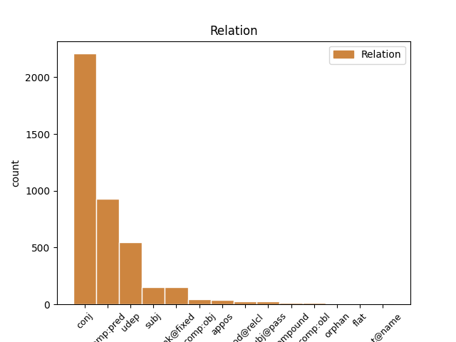
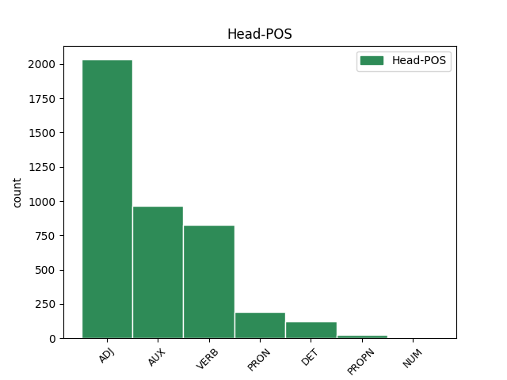
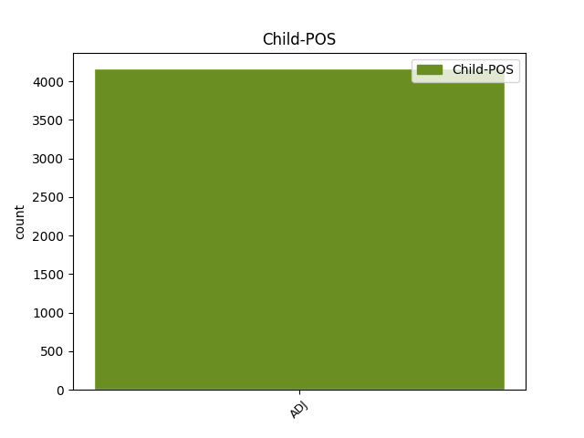

Distribution of features within this leaf



Agreement Rules sorted by frequency.
- When the dependent token is the conjunct(conj) of the head token, and the head token is ADJ and the dependent token is ADJ.
1 - _ _ _ _ 0 _ _ _
2 У _ _ _ _ 0 _ _ _
3 него _ _ _ _ 0 _ _ _
4 был _ _ _ _ 0 _ _ _
5 вежливый _ _ _ _ 0 _ _ _
6 , _ _ _ _ 0 _ _ _
7 мягкий мягкий ADJ _ Case=Nom|Degree=Pos|Gender=Masc|Number=Sing 0 _ _ _
8 и _ _ _ _ 0 _ _ _
9 терпеливый терпеливый ADJ _ Case=Nom|Degree=Pos|Gender=Masc|Number=Sing 7 conj _ _
10 голос _ _ _ _ 0 _ _ _
11 . _ _ _ _ 0 _ _ _
1 Загадочен загадочный ADJ _ Degree=Pos|Gender=Masc|Number=Sing|Variant=Short 2 comp:pred _ _
2 был быть AUX _ Aspect=Imp|Gender=Masc|Mood=Ind|Number=Sing|Tense=Past|VerbForm=Fin|Voice=Act 0 _ _ _
3 этот _ _ _ _ 0 _ _ _
4 светлый _ _ _ _ 0 _ _ _
5 , _ _ _ _ 0 _ _ _
6 чистый _ _ _ _ 0 _ _ _
7 березовый _ _ _ _ 0 _ _ _
8 и _ _ _ _ 0 _ _ _
9 осиновый _ _ _ _ 0 _ _ _
10 лесок _ _ _ _ 0 _ _ _
11 , _ _ _ _ 0 _ _ _
12 выкроивший _ _ _ _ 0 _ _ _
13 себе _ _ _ _ 0 _ _ _
14 немалую _ _ _ _ 0 _ _ _
15 площадь _ _ _ _ 0 _ _ _
16 посреди _ _ _ _ 0 _ _ _
17 ольшаника _ _ _ _ 0 _ _ _
18 . _ _ _ _ 0 _ _ _
1 Я _ _ _ _ 0 _ _ _
2 сорвал _ _ _ _ 0 _ _ _
3 гриб _ _ _ _ 0 _ _ _
4 , _ _ _ _ 0 _ _ _
5 он _ _ _ _ 0 _ _ _
6 был _ _ _ _ 0 _ _ _
7 каменной _ _ _ _ 0 _ _ _
8 крепости _ _ _ _ 0 _ _ _
9 , _ _ _ _ 0 _ _ _
10 и _ _ _ _ 0 _ _ _
11 сунул совать VERB _ Aspect=Perf|Gender=Masc|Mood=Ind|Number=Sing|Tense=Past|VerbForm=Fin|Voice=Act 0 _ _ _
12 его _ _ _ _ 0 _ _ _
13 в _ _ _ _ 0 _ _ _
14 карман _ _ _ _ 0 _ _ _
15 , _ _ _ _ 0 _ _ _
16 уверенный уверенный ADJ _ Case=Nom|Degree=Pos|Gender=Masc|Number=Sing 11 udep _ SpaceAfter=No
17 , _ _ _ _ 0 _ _ _
18 что _ _ _ _ 0 _ _ _
19 он _ _ _ _ 0 _ _ _
20 не _ _ _ _ 0 _ _ _
21 сломается _ _ _ _ 0 _ _ _
22 . _ _ _ _ 0 _ _ _
1 - _ _ _ _ 0 _ _ _
2 Она _ _ _ _ 0 _ _ _
3 все все PRON _ Animacy=Inan|Case=Nom|Gender=Neut|Number=Sing 0 _ _ _
4 равно равный ADJ _ Degree=Pos|Gender=Neut|Number=Sing|Variant=Short 3 unk@fixed _ _
5 никуда _ _ _ _ 0 _ _ _
6 не _ _ _ _ 0 _ _ _
7 ведет _ _ _ _ 0 _ _ _
8 ! _ _ _ _ 0 _ _ _
1 Действует _ _ _ _ 0 _ _ _
2 принцип _ _ _ _ 0 _ _ _
3 : _ _ _ _ 0 _ _ _
4 " _ _ _ _ 0 _ _ _
5 свой свой DET _ Case=Nom|Gender=Masc|Number=Sing 0 _ _ _
6 - _ _ _ _ 0 _ _ _
7 чужой чужой ADJ _ Case=Nom|Degree=Pos|Gender=Masc|Number=Sing 5 conj _ SpaceAfter=No
8 " _ _ _ _ 0 _ _ _
9 , _ _ _ _ 0 _ _ _
10 ведь _ _ _ _ 0 _ _ _
11 яркий _ _ _ _ 0 _ _ _
12 , _ _ _ _ 0 _ _ _
13 талантливый _ _ _ _ 0 _ _ _
14 человек _ _ _ _ 0 _ _ _
15 может _ _ _ _ 0 _ _ _
16 сломать _ _ _ _ 0 _ _ _
17 сложившийся _ _ _ _ 0 _ _ _
18 порядок _ _ _ _ 0 _ _ _
19 вещей _ _ _ _ 0 _ _ _
20 , _ _ _ _ 0 _ _ _
21 потому _ _ _ _ 0 _ _ _
22 - _ _ _ _ 0 _ _ _
23 то _ _ _ _ 0 _ _ _
24 " _ _ _ _ 0 _ _ _
25 чужаки _ _ _ _ 0 _ _ _
26 " _ _ _ _ 0 _ _ _
27 и _ _ _ _ 0 _ _ _
28 не _ _ _ _ 0 _ _ _
29 проходят _ _ _ _ 0 _ _ _
30 . _ _ _ _ 0 _ _ _
1 - _ _ _ _ 0 _ _ _
2 А _ _ _ _ 0 _ _ _
3 долетит _ _ _ _ 0 _ _ _
4 она _ _ _ _ 0 _ _ _
5 ? _ _ _ _ 0 _ _ _
6 - _ _ _ _ 0 _ _ _
7 задумчиво _ _ _ _ 0 _ _ _
8 спросил спросить VERB _ Aspect=Perf|Gender=Masc|Mood=Ind|Number=Sing|Tense=Past|VerbForm=Fin|Voice=Act 0 _ _ _
9 младший младший ADJ _ Case=Nom|Degree=Pos|Gender=Masc|Number=Sing 8 subj _ SpaceAfter=No
10 . _ _ _ _ 0 _ _ _
1 Я _ _ _ _ 0 _ _ _
2 вытряхнул _ _ _ _ 0 _ _ _
3 грибы _ _ _ _ 0 _ _ _
4 из _ _ _ _ 0 _ _ _
5 рубашки _ _ _ _ 0 _ _ _
6 и _ _ _ _ 0 _ _ _
7 надел _ _ _ _ 0 _ _ _
8 ее _ _ _ _ 0 _ _ _
9 на _ _ _ _ 0 _ _ _
10 себя _ _ _ _ 0 _ _ _
11 , _ _ _ _ 0 _ _ _
12 безнадежно _ _ _ _ 0 _ _ _
13 замаранную замарать VERB _ Aspect=Perf|Case=Acc|Gender=Fem|Number=Sing|Tense=Past|VerbForm=Part|Voice=Pass 0 _ _ _
14 , _ _ _ _ 0 _ _ _
15 приятно _ _ _ _ 0 _ _ _
16 и _ _ _ _ 0 _ _ _
17 остро _ _ _ _ 0 _ _ _
18 пахучую пахучий ADJ _ Case=Acc|Degree=Pos|Gender=Fem|Number=Sing 13 conj _ _
19 от _ _ _ _ 0 _ _ _
20 свинушек _ _ _ _ 0 _ _ _
21 , _ _ _ _ 0 _ _ _
22 и _ _ _ _ 0 _ _ _
23 двинулся _ _ _ _ 0 _ _ _
24 дальше _ _ _ _ 0 _ _ _
25 . _ _ _ _ 0 _ _ _
1 К _ _ _ _ 0 _ _ _
2 депутатской _ _ _ _ 0 _ _ _
3 деятельности _ _ _ _ 0 _ _ _
4 он _ _ _ _ 0 _ _ _
5 должен _ _ _ _ 0 _ _ _
6 быть _ _ _ _ 0 _ _ _
7 подготовлен _ _ _ _ 0 _ _ _
8 всей _ _ _ _ 0 _ _ _
9 своей _ _ _ _ 0 _ _ _
10 предшествующей _ _ _ _ 0 _ _ _
11 работой _ _ _ _ 0 _ _ _
12 : _ _ _ _ 0 _ _ _
13 государственной _ _ _ _ 0 _ _ _
14 , _ _ _ _ 0 _ _ _
15 профессиональной _ _ _ _ 0 _ _ _
16 , _ _ _ _ 0 _ _ _
17 общественной общественный ADJ _ Case=Ins|Degree=Pos|Gender=Fem|Number=Sing 0 _ _ _
18 ( _ _ _ _ 0 _ _ _
19 партийной партийный ADJ _ Case=Ins|Degree=Pos|Gender=Fem|Number=Sing 17 appos _ SpaceAfter=No
20 , _ _ _ _ 0 _ _ _
21 профсоюзной _ _ _ _ 0 _ _ _
22 и _ _ _ _ 0 _ _ _
23 т. _ _ _ _ 0 _ _ _
24 д _ _ _ _ 0 _ _ _
25 ) _ _ _ _ 0 _ _ _
26 . _ _ _ _ 0 _ _ _
1 Проблема _ _ _ _ 0 _ _ _
2 национального _ _ _ _ 0 _ _ _
3 языка _ _ _ _ 0 _ _ _
4 продолжает _ _ _ _ 0 _ _ _
5 существовать _ _ _ _ 0 _ _ _
6 в _ _ _ _ 0 _ _ _
7 атмосфере _ _ _ _ 0 _ _ _
8 неготовности _ _ _ _ 0 _ _ _
9 нашего _ _ _ _ 0 _ _ _
10 сознания _ _ _ _ 0 _ _ _
11 к _ _ _ _ 0 _ _ _
12 ее _ _ _ _ 0 _ _ _
13 радикальному _ _ _ _ 0 _ _ _
14 разрешению _ _ _ _ 0 _ _ _
15 , _ _ _ _ 0 _ _ _
16 хотя _ _ _ _ 0 _ _ _
17 последнее последний ADJ _ Case=Nom|Degree=Pos|Gender=Neut|Number=Sing 19 subj _ _
18 так _ _ _ _ 0 _ _ _
19 просто простой ADJ _ Degree=Pos|Gender=Neut|Number=Sing|Variant=Short 0 _ _ _
20 и _ _ _ _ 0 _ _ _
21 естественно _ _ _ _ 0 _ _ _
22 в _ _ _ _ 0 _ _ _
23 условиях _ _ _ _ 0 _ _ _
24 демократизации _ _ _ _ 0 _ _ _
25 . _ _ _ _ 0 _ _ _
1 Главная главный ADJ _ Case=Nom|Degree=Pos|Gender=Fem|Number=Sing 4 subj@pass _ _
2 из _ _ _ _ 0 _ _ _
3 задач _ _ _ _ 0 _ _ _
4 связана связать VERB _ Aspect=Perf|Gender=Fem|Number=Sing|Tense=Past|Variant=Short|VerbForm=Part|Voice=Pass 0 _ _ _
5 с _ _ _ _ 0 _ _ _
6 тем _ _ _ _ 0 _ _ _
7 , _ _ _ _ 0 _ _ _
8 что _ _ _ _ 0 _ _ _
9 получение _ _ _ _ 0 _ _ _
10 легких _ _ _ _ 0 _ _ _
11 металлов _ _ _ _ 0 _ _ _
12 требует _ _ _ _ 0 _ _ _
13 большого _ _ _ _ 0 _ _ _
14 количества _ _ _ _ 0 _ _ _
15 энергии _ _ _ _ 0 _ _ _
16 . _ _ _ _ 0 _ _ _
1 Что _ _ _ _ 0 _ _ _
2 это _ _ _ _ 0 _ _ _
3 за _ _ _ _ 0 _ _ _
4 кривые _ _ _ _ 0 _ _ _
5 - _ _ _ _ 0 _ _ _
6 не _ _ _ _ 0 _ _ _
7 сильно _ _ _ _ 0 _ _ _
8 важно _ _ _ _ 0 _ _ _
9 , _ _ _ _ 0 _ _ _
10 просто _ _ _ _ 0 _ _ _
11 видно _ _ _ _ 0 _ _ _
12 , _ _ _ _ 0 _ _ _
13 что _ _ _ _ 0 _ _ _
14 разные _ _ _ _ 0 _ _ _
15 теоретические _ _ _ _ 0 _ _ _
16 подходы _ _ _ _ 0 _ _ _
17 к _ _ _ _ 0 _ _ _
18 описанию _ _ _ _ 0 _ _ _
19 отклика _ _ _ _ 0 _ _ _
20 этой _ _ _ _ 0 _ _ _
21 молекулы _ _ _ _ 0 _ _ _
22 , _ _ _ _ 0 _ _ _
23 скажем _ _ _ _ 0 _ _ _
24 , _ _ _ _ 0 _ _ _
25 с _ _ _ _ 0 _ _ _
26 учетом _ _ _ _ 0 _ _ _
27 переноса _ _ _ _ 0 _ _ _
28 электронов _ _ _ _ 0 _ _ _
29 или _ _ _ _ 0 _ _ _
30 протонов _ _ _ _ 0 _ _ _
31 или _ _ _ _ 0 _ _ _
32 того то PRON _ Animacy=Inan|Case=Gen|Gender=Neut|Number=Sing 0 _ _ _
33 и _ _ _ _ 0 _ _ _
34 другого другой ADJ _ Case=Gen|Degree=Pos|Gender=Neut|Number=Sing 32 conj _ _
35 вместе _ _ _ _ 0 _ _ _
36 дают _ _ _ _ 0 _ _ _
37 немножко _ _ _ _ 0 _ _ _
38 разные _ _ _ _ 0 _ _ _
39 предсказания _ _ _ _ 0 _ _ _
40 , _ _ _ _ 0 _ _ _
41 и _ _ _ _ 0 _ _ _
42 самые _ _ _ _ 0 _ _ _
43 лучшие _ _ _ _ 0 _ _ _
44 предсказания _ _ _ _ 0 _ _ _
45 дает _ _ _ _ 0 _ _ _
46 кривая _ _ _ _ 0 _ _ _
47 , _ _ _ _ 0 _ _ _
48 которая _ _ _ _ 0 _ _ _
49 учитывает _ _ _ _ 0 _ _ _
50 , _ _ _ _ 0 _ _ _
51 скажем _ _ _ _ 0 _ _ _
52 , _ _ _ _ 0 _ _ _
53 перенос _ _ _ _ 0 _ _ _
54 и _ _ _ _ 0 _ _ _
55 электронов _ _ _ _ 0 _ _ _
56 и _ _ _ _ 0 _ _ _
57 протонов _ _ _ _ 0 _ _ _
58 . _ _ _ _ 0 _ _ _
1 В _ _ _ _ 0 _ _ _
2 завалах _ _ _ _ 0 _ _ _
3 играли _ _ _ _ 0 _ _ _
4 дети _ _ _ _ 0 _ _ _
5 , _ _ _ _ 0 _ _ _
6 там _ _ _ _ 0 _ _ _
7 легко _ _ _ _ 0 _ _ _
8 было _ _ _ _ 0 _ _ _
9 нафантазировать _ _ _ _ 0 _ _ _
10 все все PRON _ Animacy=Inan|Case=Acc|Gender=Neut|Number=Sing 0 _ _ _
11 , _ _ _ _ 0 _ _ _
12 что _ _ _ _ 0 _ _ _
13 угодно угодный ADJ _ Degree=Pos|Gender=Neut|Number=Sing|Variant=Short 10 mod@relcl _ SpaceAfter=No
14 . _ _ _ _ 0 _ _ _
1 Добровольцы _ _ _ _ 0 _ _ _
2 ( _ _ _ _ 0 _ _ _
3 у _ _ _ _ 0 _ _ _
4 всех _ _ _ _ 0 _ _ _
5 родным _ _ _ _ 0 _ _ _
6 языком _ _ _ _ 0 _ _ _
7 был быть AUX _ Aspect=Imp|Gender=Masc|Mood=Ind|Number=Sing|Tense=Past|VerbForm=Fin|Voice=Act 0 _ _ _
8 американский _ _ _ _ 0 _ _ _
9 английский английский ADJ _ Case=Nom|Degree=Pos|Gender=Masc|Number=Sing 7 subj _ SpaceAfter=No
10 ) _ _ _ _ 0 _ _ _
11 произносили _ _ _ _ 0 _ _ _
12 различные _ _ _ _ 0 _ _ _
13 звуки _ _ _ _ 0 _ _ _
14 - _ _ _ _ 0 _ _ _
15 отдельно _ _ _ _ 0 _ _ _
16 или _ _ _ _ 0 _ _ _
17 в _ _ _ _ 0 _ _ _
18 составе _ _ _ _ 0 _ _ _
19 слов _ _ _ _ 0 _ _ _
20 . _ _ _ _ 0 _ _ _
1 Происходила _ _ _ _ 0 _ _ _
2 Марья _ _ _ _ 0 _ _ _
3 Федоровна _ _ _ _ 0 _ _ _
4 из _ _ _ _ 0 _ _ _
5 коренных _ _ _ _ 0 _ _ _
6 питерских _ _ _ _ 0 _ _ _
7 рабочих _ _ _ _ 0 _ _ _
8 и _ _ _ _ 0 _ _ _
9 сама сам ADJ _ Case=Nom|Degree=Pos|Gender=Fem|Number=Sing 11 comp:obj _ _
10 себя _ _ _ _ 0 _ _ _
11 называла называть VERB _ Aspect=Imp|Gender=Fem|Mood=Ind|Number=Sing|Tense=Past|VerbForm=Fin|Voice=Act 0 _ _ _
12 " _ _ _ _ 0 _ _ _
13 пролетария _ _ _ _ 0 _ _ _
14 всех _ _ _ _ 0 _ _ _
15 стран _ _ _ _ 0 _ _ _
16 " _ _ _ _ 0 _ _ _
17 . _ _ _ _ 0 _ _ _
1 Сухарь _ _ _ _ 0 _ _ _
2 был быть AUX _ Aspect=Imp|Gender=Masc|Mood=Ind|Number=Sing|Tense=Past|VerbForm=Fin|Voice=Act 0 _ _ _
3 весь _ _ _ _ 0 _ _ _
4 в _ _ _ _ 0 _ _ _
5 табачных _ _ _ _ 0 _ _ _
6 крошках _ _ _ _ 0 _ _ _
7 и _ _ _ _ 0 _ _ _
8 каменный каменный ADJ _ Case=Nom|Degree=Pos|Gender=Masc|Number=Sing 2 conj _ _
9 от _ _ _ _ 0 _ _ _
10 холода _ _ _ _ 0 _ _ _
11 … _ _ _ _ 0 _ _ _
1 Фантазия _ _ _ _ 0 _ _ _
2 Павлова _ _ _ _ 0 _ _ _
3 имела _ _ _ _ 0 _ _ _
4 сугубо _ _ _ _ 0 _ _ _
5 практическое _ _ _ _ 0 _ _ _
6 направление _ _ _ _ 0 _ _ _
7 , _ _ _ _ 0 _ _ _
8 он _ _ _ _ 0 _ _ _
9 никогда _ _ _ _ 0 _ _ _
10 не _ _ _ _ 0 _ _ _
11 воображал _ _ _ _ 0 _ _ _
12 себя _ _ _ _ 0 _ _ _
13 победителем _ _ _ _ 0 _ _ _
14 драконов _ _ _ _ 0 _ _ _
15 и _ _ _ _ 0 _ _ _
16 великанов _ _ _ _ 0 _ _ _
17 , _ _ _ _ 0 _ _ _
18 а _ _ _ _ 0 _ _ _
19 был быть AUX _ Aspect=Imp|Gender=Masc|Mood=Ind|Number=Sing|Tense=Past|VerbForm=Fin|Voice=Act 0 _ _ _
20 озабочен _ _ _ _ 0 _ _ _
21 другим другой ADJ _ Case=Ins|Degree=Pos|Gender=Masc|Number=Sing 19 udep _ SpaceAfter=No
22 : _ _ _ _ 0 _ _ _
23 где _ _ _ _ 0 _ _ _
24 бы _ _ _ _ 0 _ _ _
25 подработать _ _ _ _ 0 _ _ _
26 , _ _ _ _ 0 _ _ _
27 занять _ _ _ _ 0 _ _ _
28 денег _ _ _ _ 0 _ _ _
29 , _ _ _ _ 0 _ _ _
30 разжиться _ _ _ _ 0 _ _ _
31 дровишками _ _ _ _ 0 _ _ _
32 , _ _ _ _ 0 _ _ _
33 керосином _ _ _ _ 0 _ _ _
34 , _ _ _ _ 0 _ _ _
35 свести _ _ _ _ 0 _ _ _
36 концы _ _ _ _ 0 _ _ _
37 с _ _ _ _ 0 _ _ _
38 концами _ _ _ _ 0 _ _ _
39 . _ _ _ _ 0 _ _ _
1 Зрелище _ _ _ _ 0 _ _ _
2 совершенно _ _ _ _ 0 _ _ _
3 удивительное удивительный ADJ _ Case=Nom|Degree=Pos|Gender=Neut|Number=Sing 0 _ _ _
4 само сам ADJ _ Case=Nom|Degree=Pos|Gender=Neut|Number=Sing 3 udep _ _
5 по _ _ _ _ 0 _ _ _
6 себе _ _ _ _ 0 _ _ _
7 . _ _ _ _ 0 _ _ _
1 Допустим _ _ _ _ 0 _ _ _
2 , _ _ _ _ 0 _ _ _
3 два _ _ _ _ 0 _ _ _
4 исследователя _ _ _ _ 0 _ _ _
5 пишут _ _ _ _ 0 _ _ _
6 статьи _ _ _ _ 0 _ _ _
7 : _ _ _ _ 0 _ _ _
8 один один NUM _ Case=Nom|Gender=Masc 0 _ _ _
9 - _ _ _ _ 0 _ _ _
10 хорошие _ _ _ _ 0 _ _ _
11 , _ _ _ _ 0 _ _ _
12 другой другой ADJ _ Case=Nom|Degree=Pos|Gender=Masc|Number=Sing 8 conj _ _
13 - _ _ _ _ 0 _ _ _
14 плохие _ _ _ _ 0 _ _ _
15 . _ _ _ _ 0 _ _ _
1 Общее общий ADJ _ Case=Nom|Degree=Pos|Gender=Neut|Number=Sing 0 _ _ _
2 , _ _ _ _ 0 _ _ _
3 что _ _ _ _ 0 _ _ _
4 характерно характерный ADJ _ Degree=Pos|Gender=Neut|Number=Sing|Variant=Short 1 mod@relcl _ _
5 для _ _ _ _ 0 _ _ _
6 истории _ _ _ _ 0 _ _ _
7 конца _ _ _ _ 0 _ _ _
8 XX _ _ _ _ 0 _ _ _
9 века _ _ _ _ 0 _ _ _
10 , _ _ _ _ 0 _ _ _
11 - _ _ _ _ 0 _ _ _
12 глобализация _ _ _ _ 0 _ _ _
13 социальной _ _ _ _ 0 _ _ _
14 , _ _ _ _ 0 _ _ _
15 экономической _ _ _ _ 0 _ _ _
16 и _ _ _ _ 0 _ _ _
17 политической _ _ _ _ 0 _ _ _
18 жизни _ _ _ _ 0 _ _ _
19 народов _ _ _ _ 0 _ _ _
20 , _ _ _ _ 0 _ _ _
21 наряду _ _ _ _ 0 _ _ _
22 с _ _ _ _ 0 _ _ _
23 этим _ _ _ _ 0 _ _ _
24 - _ _ _ _ 0 _ _ _
25 глобализация _ _ _ _ 0 _ _ _
26 опасностей _ _ _ _ 0 _ _ _
27 , _ _ _ _ 0 _ _ _
28 грозящих _ _ _ _ 0 _ _ _
29 человеческому _ _ _ _ 0 _ _ _
30 роду _ _ _ _ 0 _ _ _
31 . _ _ _ _ 0 _ _ _
1 - _ _ _ _ 0 _ _ _
2 А _ _ _ _ 0 _ _ _
3 голова _ _ _ _ 0 _ _ _
4 у _ _ _ _ 0 _ _ _
5 нее _ _ _ _ 0 _ _ _
6 красная красный ADJ _ Case=Nom|Degree=Pos|Gender=Fem|Number=Sing 0 _ _ _
7 - _ _ _ _ 0 _ _ _
8 красная красный ADJ _ Case=Nom|Degree=Pos|Gender=Fem|Number=Sing 6 flat _ SpaceAfter=No
9 , _ _ _ _ 0 _ _ _
10 так _ _ _ _ 0 _ _ _
11 и _ _ _ _ 0 _ _ _
12 горит _ _ _ _ 0 _ _ _
13 ! _ _ _ _ 0 _ _ _
14 - _ _ _ _ 0 _ _ _
15 пылко _ _ _ _ 0 _ _ _
16 вскричал _ _ _ _ 0 _ _ _
17 младший _ _ _ _ 0 _ _ _
18 . _ _ _ _ 0 _ _ _
1 У _ _ _ _ 0 _ _ _
2 нас _ _ _ _ 0 _ _ _
3 , _ _ _ _ 0 _ _ _
4 к _ _ _ _ 0 _ _ _
5 сожалению _ _ _ _ 0 _ _ _
6 , _ _ _ _ 0 _ _ _
7 не _ _ _ _ 0 _ _ _
8 принято _ _ _ _ 0 _ _ _
9 было _ _ _ _ 0 _ _ _
10 серьезно _ _ _ _ 0 _ _ _
11 учитывать _ _ _ _ 0 _ _ _
12 мнение _ _ _ _ 0 _ _ _
13 ЦК _ _ _ _ 0 _ _ _
14 ВЛКСМ _ _ _ _ 0 _ _ _
15 при _ _ _ _ 0 _ _ _
16 составлении _ _ _ _ 0 _ _ _
17 проекта _ _ _ _ 0 _ _ _
18 плана _ _ _ _ 0 _ _ _
19 социально социальный ADJ _ Degree=Pos|Gender=Neut|Number=Sing|Variant=Short 21 compound _ _
20 - _ _ _ _ 0 _ _ _
21 экономического экономический ADJ _ Case=Gen|Degree=Pos|Gender=Neut|Number=Sing 0 _ _ _
22 развития _ _ _ _ 0 _ _ _
23 страны _ _ _ _ 0 _ _ _
24 на _ _ _ _ 0 _ _ _
25 предстоящий _ _ _ _ 0 _ _ _
26 период _ _ _ _ 0 _ _ _
27 . _ _ _ _ 0 _ _ _
1 Чтобы _ _ _ _ 0 _ _ _
2 стать _ _ _ _ 0 _ _ _
3 таким такой DET _ Case=Ins|Gender=Masc|Number=Sing 0 _ _ _
4 , _ _ _ _ 0 _ _ _
5 каким _ _ _ _ 0 _ _ _
6 он _ _ _ _ 0 _ _ _
7 должен должен ADJ _ Degree=Pos|Gender=Masc|Number=Sing|Variant=Short 3 mod@relcl _ _
8 быть _ _ _ _ 0 _ _ _
9 . _ _ _ _ 0 _ _ _
1 Не _ _ _ _ 0 _ _ _
2 рекомендуется _ _ _ _ 0 _ _ _
3 менять _ _ _ _ 0 _ _ _
4 Цилиндры _ _ _ _ 0 _ _ _
5 местами _ _ _ _ 0 _ _ _
6 : _ _ _ _ 0 _ _ _
7 одновременно _ _ _ _ 0 _ _ _
8 брать _ _ _ _ 0 _ _ _
9 Солнечный _ _ _ _ 0 _ _ _
10 Цилиндр Цилиндр PROPN _ Animacy=Inan|Case=Acc|Gender=Masc|Number=Sing 0 _ _ _
11 в _ _ _ _ 0 _ _ _
12 левую _ _ _ _ 0 _ _ _
13 , _ _ _ _ 0 _ _ _
14 а _ _ _ _ 0 _ _ _
15 Лунный лунный ADJ _ Animacy=Inan|Case=Acc|Degree=Pos|Gender=Masc|Number=Sing 10 conj _ _
16 - _ _ _ _ 0 _ _ _
17 в _ _ _ _ 0 _ _ _
18 правую _ _ _ _ 0 _ _ _
19 руку _ _ _ _ 0 _ _ _
20 . _ _ _ _ 0 _ _ _
1 Теперь _ _ _ _ 0 _ _ _
2 Юля _ _ _ _ 0 _ _ _
3 - _ _ _ _ 0 _ _ _
4 кандидат _ _ _ _ 0 _ _ _
5 биологических _ _ _ _ 0 _ _ _
6 наук _ _ _ _ 0 _ _ _
7 , _ _ _ _ 0 _ _ _
8 отучилась _ _ _ _ 0 _ _ _
9 во _ _ _ _ 0 _ _ _
10 Франции _ _ _ _ 0 _ _ _
11 , _ _ _ _ 0 _ _ _
12 и _ _ _ _ 0 _ _ _
13 два _ _ _ _ 0 _ _ _
14 поколения _ _ _ _ 0 _ _ _
15 Бодровых _ _ _ _ 0 _ _ _
16 делают _ _ _ _ 0 _ _ _
17 в _ _ _ _ 0 _ _ _
18 России _ _ _ _ 0 _ _ _
19 замечательный _ _ _ _ 0 _ _ _
20 сыр _ _ _ _ 0 _ _ _
21 , _ _ _ _ 0 _ _ _
22 по _ _ _ _ 0 _ _ _
23 качеству _ _ _ _ 0 _ _ _
24 не _ _ _ _ 0 _ _ _
25 уступающий уступать VERB _ Animacy=Inan|Aspect=Imp|Case=Acc|Gender=Masc|Number=Sing|Tense=Pres|VerbForm=Part|Voice=Act 0 _ _ _
26 французскому французский ADJ _ Case=Dat|Degree=Pos|Gender=Masc|Number=Sing 25 comp:obl _ SpaceAfter=No
27 . _ _ _ _ 0 _ _ _
1 С _ _ _ _ 0 _ _ _
2 позиции _ _ _ _ 0 _ _ _
3 этого _ _ _ _ 0 _ _ _
4 подхода _ _ _ _ 0 _ _ _
5 очень _ _ _ _ 0 _ _ _
6 важен _ _ _ _ 0 _ _ _
7 учебник _ _ _ _ 0 _ _ _
8 - _ _ _ _ 0 _ _ _
9 он _ _ _ _ 0 _ _ _
10 и _ _ _ _ 0 _ _ _
11 несет _ _ _ _ 0 _ _ _
12 в _ _ _ _ 0 _ _ _
13 себе _ _ _ _ 0 _ _ _
14 Знание Знание PROPN _ Animacy=Inan|Case=Acc|Gender=Neut|Number=Sing 0 _ _ _
15 , _ _ _ _ 0 _ _ _
16 которое _ _ _ _ 0 _ _ _
17 необходимо необходимый ADJ _ Degree=Pos|Gender=Neut|Number=Sing|Variant=Short 14 mod@relcl _ _
18 преподать _ _ _ _ 0 _ _ _
19 . _ _ _ _ 0 _ _ _
1 В _ _ _ _ 0 _ _ _
2 мире _ _ _ _ 0 _ _ _
3 гламура _ _ _ _ 0 _ _ _
4 существует _ _ _ _ 0 _ _ _
5 корреляция _ _ _ _ 0 _ _ _
6 между _ _ _ _ 0 _ _ _
7 внешностью _ _ _ _ 0 _ _ _
8 и _ _ _ _ 0 _ _ _
9 успешностью _ _ _ _ 0 _ _ _
10 , _ _ _ _ 0 _ _ _
11 и _ _ _ _ 0 _ _ _
12 , _ _ _ _ 0 _ _ _
13 даже _ _ _ _ 0 _ _ _
14 не _ _ _ _ 0 _ _ _
15 желая _ _ _ _ 0 _ _ _
16 быть _ _ _ _ 0 _ _ _
17 пресловутыми _ _ _ _ 0 _ _ _
18 блондинками _ _ _ _ 0 _ _ _
19 , _ _ _ _ 0 _ _ _
20 люди _ _ _ _ 0 _ _ _
21 инвестируют _ _ _ _ 0 _ _ _
22 деньги _ _ _ _ 0 _ _ _
23 , _ _ _ _ 0 _ _ _
24 время _ _ _ _ 0 _ _ _
25 , _ _ _ _ 0 _ _ _
26 здоровье _ _ _ _ 0 _ _ _
27 в _ _ _ _ 0 _ _ _
28 управление _ _ _ _ 0 _ _ _
29 внешностью _ _ _ _ 0 _ _ _
30 , _ _ _ _ 0 _ _ _
31 чтобы _ _ _ _ 0 _ _ _
32 чувствовать _ _ _ _ 0 _ _ _
33 себя _ _ _ _ 0 _ _ _
34 , _ _ _ _ 0 _ _ _
35 как _ _ _ _ 0 _ _ _
36 блондинки _ _ _ _ 0 _ _ _
37 , _ _ _ _ 0 _ _ _
38 то то PRON _ Animacy=Inan|Case=Nom|Gender=Neut|Number=Sing 0 _ _ _
39 есть _ _ _ _ 0 _ _ _
40 уверенно уверенный ADJ _ Degree=Pos|Gender=Neut|Number=Sing|Variant=Short 38 comp:obj _ _
41 и _ _ _ _ 0 _ _ _
42 беспроблемно _ _ _ _ 0 _ _ _
43 . _ _ _ _ 0 _ _ _
1 Наша _ _ _ _ 0 _ _ _
2 школа _ _ _ _ 0 _ _ _
3 в _ _ _ _ 0 _ _ _
4 национальных _ _ _ _ 0 _ _ _
5 республиках _ _ _ _ 0 _ _ _
6 давно _ _ _ _ 0 _ _ _
7 и _ _ _ _ 0 _ _ _
8 уверенно _ _ _ _ 0 _ _ _
9 выдвинула _ _ _ _ 0 _ _ _
10 русский _ _ _ _ 0 _ _ _
11 язык _ _ _ _ 0 _ _ _
12 в _ _ _ _ 0 _ _ _
13 качестве _ _ _ _ 0 _ _ _
14 альтернативного альтернативный ADJ _ Case=Gen|Degree=Pos|Gender=Masc|Number=Sing 0 _ _ _
15 родному родной ADJ _ Case=Dat|Degree=Pos|Gender=Masc|Number=Sing 14 comp:obl _ SpaceAfter=No
16 , _ _ _ _ 0 _ _ _
17 и _ _ _ _ 0 _ _ _
18 миллионы _ _ _ _ 0 _ _ _
19 учащихся _ _ _ _ 0 _ _ _
20 пренебрегают _ _ _ _ 0 _ _ _
21 языком _ _ _ _ 0 _ _ _
22 предков _ _ _ _ 0 _ _ _
23 . _ _ _ _ 0 _ _ _
1 Один _ _ _ _ 0 _ _ _
2 - _ _ _ _ 0 _ _ _
3 Запад _ _ _ _ 0 _ _ _
4 , _ _ _ _ 0 _ _ _
5 другой другой ADJ _ Case=Nom|Degree=Pos|Gender=Masc|Number=Sing 7 subj _ _
6 - _ _ _ _ 0 _ _ _
7 Восток Восток PROPN _ Animacy=Inan|Case=Nom|Gender=Masc|Number=Sing 0 _ _ _
8 . _ _ _ _ 0 _ _ _
1 Первая первый ADJ _ Case=Nom|Degree=Pos|Gender=Fem|Number=Sing 7 subj@pass _ SpaceAfter=No
2 , _ _ _ _ 0 _ _ _
3 по _ _ _ _ 0 _ _ _
4 всей _ _ _ _ 0 _ _ _
5 видимости _ _ _ _ 0 _ _ _
6 , _ _ _ _ 0 _ _ _
7 была быть AUX _ Aspect=Imp|Gender=Fem|Mood=Ind|Number=Sing|Tense=Past|VerbForm=Fin|Voice=Act 0 _ _ _
8 развернута _ _ _ _ 0 _ _ _
9 в _ _ _ _ 0 _ _ _
10 ходе _ _ _ _ 0 _ _ _
11 Альбигойских _ _ _ _ 0 _ _ _
12 войн _ _ _ _ 0 _ _ _
13 . _ _ _ _ 0 _ _ _
1 Святой _ _ _ _ 0 _ _ _
2 равноапостольный _ _ _ _ 0 _ _ _
3 князь _ _ _ _ 0 _ _ _
4 Владимир Владимир PROPN _ Animacy=Anim|Case=Nom|Gender=Masc|Number=Sing 0 _ _ _
5 Великий великий ADJ _ Case=Nom|Degree=Pos|Gender=Masc|Number=Sing 4 appos _ _
6 назначил _ _ _ _ 0 _ _ _
7 князем _ _ _ _ 0 _ _ _
8 на _ _ _ _ 0 _ _ _
9 Волынь _ _ _ _ 0 _ _ _
10 своего _ _ _ _ 0 _ _ _
11 сына _ _ _ _ 0 _ _ _
12 Всеволода _ _ _ _ 0 _ _ _
13 , _ _ _ _ 0 _ _ _
14 которому _ _ _ _ 0 _ _ _
15 подчинялась _ _ _ _ 0 _ _ _
16 не _ _ _ _ 0 _ _ _
17 только _ _ _ _ 0 _ _ _
18 Волынь _ _ _ _ 0 _ _ _
19 , _ _ _ _ 0 _ _ _
20 но _ _ _ _ 0 _ _ _
21 и _ _ _ _ 0 _ _ _
22 все _ _ _ _ 0 _ _ _
23 червенские _ _ _ _ 0 _ _ _
24 города _ _ _ _ 0 _ _ _
25 до _ _ _ _ 0 _ _ _
26 предгорий _ _ _ _ 0 _ _ _
27 Карпат _ _ _ _ 0 _ _ _
28 . _ _ _ _ 0 _ _ _
1 Необходимо _ _ _ _ 0 _ _ _
2 взяться _ _ _ _ 0 _ _ _
3 за _ _ _ _ 0 _ _ _
4 руки _ _ _ _ 0 _ _ _
5 , _ _ _ _ 0 _ _ _
6 а _ _ _ _ 0 _ _ _
7 в _ _ _ _ 0 _ _ _
8 свободные _ _ _ _ 0 _ _ _
9 руки _ _ _ _ 0 _ _ _
10 взять _ _ _ _ 0 _ _ _
11 Цилиндры _ _ _ _ 0 _ _ _
12 : _ _ _ _ 0 _ _ _
13 одному _ _ _ _ 0 _ _ _
14 - _ _ _ _ 0 _ _ _
15 в _ _ _ _ 0 _ _ _
16 правую _ _ _ _ 0 _ _ _
17 - _ _ _ _ 0 _ _ _
18 Солнечный _ _ _ _ 0 _ _ _
19 , _ _ _ _ 0 _ _ _
20 другому другой ADJ _ Case=Dat|Degree=Pos|Gender=Masc|Number=Sing 25 orphan _ _
21 - _ _ _ _ 0 _ _ _
22 в _ _ _ _ 0 _ _ _
23 левую _ _ _ _ 0 _ _ _
24 - _ _ _ _ 0 _ _ _
25 Лунный лунный ADJ _ Animacy=Inan|Case=Acc|Degree=Pos|Gender=Masc|Number=Sing 0 _ _ _
26 . _ _ _ _ 0 _ _ _
1 Ольга Ольга PROPN _ Animacy=Anim|Case=Nom|Gender=Fem|Number=Sing 0 _ _ _
2 Щучкина _ _ _ _ 0 _ _ _
3 - _ _ _ _ 0 _ _ _
4 38-й 38-й ADJ _ Case=Ins|Degree=Pos|Gender=Fem|Number=Sing 1 orphan _ SpaceAfter=No
5 . _ _ _ _ 0 _ _ _
1 Творчески _ _ _ _ 0 _ _ _
2 , _ _ _ _ 0 _ _ _
3 с _ _ _ _ 0 _ _ _
4 хорошей _ _ _ _ 0 _ _ _
5 самоотдачей _ _ _ _ 0 _ _ _
6 работают _ _ _ _ 0 _ _ _
7 недавно _ _ _ _ 0 _ _ _
8 выдвинутые _ _ _ _ 0 _ _ _
9 на _ _ _ _ 0 _ _ _
10 ответственные _ _ _ _ 0 _ _ _
11 посты _ _ _ _ 0 _ _ _
12 первые _ _ _ _ 0 _ _ _
13 секретари _ _ _ _ 0 _ _ _
14 райкомов _ _ _ _ 0 _ _ _
15 КПСС _ _ _ _ 0 _ _ _
16 : _ _ _ _ 0 _ _ _
17 Калевальского _ _ _ _ 0 _ _ _
18 - _ _ _ _ 0 _ _ _
19 М. _ _ _ _ 0 _ _ _
20 Демидов _ _ _ _ 0 _ _ _
21 , _ _ _ _ 0 _ _ _
22 Пудожского пудожский ADJ _ Case=Gen|Degree=Pos|Gender=Masc|Number=Sing 24 udep _ _
23 - _ _ _ _ 0 _ _ _
24 В. В. PROPN _ Animacy=Anim|Case=Nom|Gender=Masc|Number=Sing 0 _ _ _
25 Маликов _ _ _ _ 0 _ _ _
26 , _ _ _ _ 0 _ _ _
27 генеральный _ _ _ _ 0 _ _ _
28 директор _ _ _ _ 0 _ _ _
29 объединения _ _ _ _ 0 _ _ _
30 " _ _ _ _ 0 _ _ _
31 Кареллеспром _ _ _ _ 0 _ _ _
32 " _ _ _ _ 0 _ _ _
33 И. _ _ _ _ 0 _ _ _
34 Санкин _ _ _ _ 0 _ _ _
35 и _ _ _ _ 0 _ _ _
36 другие _ _ _ _ 0 _ _ _
37 руководители _ _ _ _ 0 _ _ _
38 . _ _ _ _ 0 _ _ _
1 Быть _ _ _ _ 0 _ _ _
2 может _ _ _ _ 0 _ _ _
3 , _ _ _ _ 0 _ _ _
4 он он PRON _ Case=Nom|Gender=Masc|Number=Sing|Person=3 0 _ _ _
5 сам сам ADJ _ Case=Nom|Degree=Pos|Gender=Masc|Number=Sing 4 orphan _ SpaceAfter=No
6 ? _ _ _ _ 0 _ _ _
1 Единственное единственный ADJ _ Case=Nom|Degree=Pos|Gender=Neut|Number=Sing 7 subj _ SpaceAfter=No
2 , _ _ _ _ 0 _ _ _
3 что _ _ _ _ 0 _ _ _
4 нужно _ _ _ _ 0 _ _ _
5 , _ _ _ _ 0 _ _ _
6 так _ _ _ _ 0 _ _ _
7 это это PRON _ Animacy=Inan|Case=Nom|Gender=Neut|Number=Sing 0 _ _ _
8 единые _ _ _ _ 0 _ _ _
9 для _ _ _ _ 0 _ _ _
10 всех _ _ _ _ 0 _ _ _
11 правила _ _ _ _ 0 _ _ _
12 игры _ _ _ _ 0 _ _ _
13 , _ _ _ _ 0 _ _ _
14 " _ _ _ _ 0 _ _ _
15 письменная _ _ _ _ 0 _ _ _
16 фиксация _ _ _ _ 0 _ _ _
17 правил _ _ _ _ 0 _ _ _
18 " _ _ _ _ 0 _ _ _
19 , _ _ _ _ 0 _ _ _
20 считает _ _ _ _ 0 _ _ _
21 Виктор _ _ _ _ 0 _ _ _
22 Шендерович _ _ _ _ 0 _ _ _
23 . _ _ _ _ 0 _ _ _
1 Причем _ _ _ _ 0 _ _ _
2 сделала _ _ _ _ 0 _ _ _
3 она _ _ _ _ 0 _ _ _
4 это _ _ _ _ 0 _ _ _
5 в _ _ _ _ 0 _ _ _
6 самый _ _ _ _ 0 _ _ _
7 разгар _ _ _ _ 0 _ _ _
8 Олимпийских _ _ _ _ 0 _ _ _
9 игр _ _ _ _ 0 _ _ _
10 , _ _ _ _ 0 _ _ _
11 а _ _ _ _ 0 _ _ _
12 значит _ _ _ _ 0 _ _ _
13 , _ _ _ _ 0 _ _ _
14 обрекла _ _ _ _ 0 _ _ _
15 свои _ _ _ _ 0 _ _ _
16 слова _ _ _ _ 0 _ _ _
17 на _ _ _ _ 0 _ _ _
18 самое _ _ _ _ 0 _ _ _
19 , _ _ _ _ 0 _ _ _
20 какое какой DET _ Case=Acc|Gender=Neut|Number=Sing 0 _ _ _
21 только _ _ _ _ 0 _ _ _
22 возможно возможный ADJ _ Degree=Pos|Gender=Neut|Number=Sing|Variant=Short 20 unk@fixed _ SpaceAfter=No
23 , _ _ _ _ 0 _ _ _
24 широкое _ _ _ _ 0 _ _ _
25 освещение _ _ _ _ 0 _ _ _
26 в _ _ _ _ 0 _ _ _
27 прессе _ _ _ _ 0 _ _ _
28 . _ _ _ _ 0 _ _ _
1 Один один NUM _ Case=Nom|Gender=Masc 0 _ _ _
2 из _ _ _ _ 0 _ _ _
3 конкретных _ _ _ _ 0 _ _ _
4 вопросов _ _ _ _ 0 _ _ _
5 , _ _ _ _ 0 _ _ _
6 который _ _ _ _ 0 _ _ _
7 очень _ _ _ _ 0 _ _ _
8 важен важный ADJ _ Degree=Pos|Gender=Masc|Number=Sing|Variant=Short 1 mod@relcl _ SpaceAfter=No
9 , _ _ _ _ 0 _ _ _
10 конечно _ _ _ _ 0 _ _ _
11 , _ _ _ _ 0 _ _ _
12 для _ _ _ _ 0 _ _ _
13 этой _ _ _ _ 0 _ _ _
14 области _ _ _ _ 0 _ _ _
15 , _ _ _ _ 0 _ _ _
16 - _ _ _ _ 0 _ _ _
17 вопрос _ _ _ _ 0 _ _ _
18 о _ _ _ _ 0 _ _ _
19 том _ _ _ _ 0 _ _ _
20 , _ _ _ _ 0 _ _ _
21 как _ _ _ _ 0 _ _ _
22 живет _ _ _ _ 0 _ _ _
23 атомарно _ _ _ _ 0 _ _ _
24 гладкая _ _ _ _ 0 _ _ _
25 поверхность _ _ _ _ 0 _ _ _
26 кристалла _ _ _ _ 0 _ _ _
27 при _ _ _ _ 0 _ _ _
28 конечной _ _ _ _ 0 _ _ _
29 температуре _ _ _ _ 0 _ _ _
30 , _ _ _ _ 0 _ _ _
31 то _ _ _ _ 0 _ _ _
32 есть _ _ _ _ 0 _ _ _
33 при _ _ _ _ 0 _ _ _
34 обычной _ _ _ _ 0 _ _ _
35 комнатной _ _ _ _ 0 _ _ _
36 температуре _ _ _ _ 0 _ _ _
37 . _ _ _ _ 0 _ _ _
1 Сетевые _ _ _ _ 0 _ _ _
2 структуры _ _ _ _ 0 _ _ _
3 порождают _ _ _ _ 0 _ _ _
4 некую некий DET _ Case=Acc|Gender=Fem|Number=Sing 0 _ _ _
5 ( _ _ _ _ 0 _ _ _
6 быть _ _ _ _ 0 _ _ _
7 может _ _ _ _ 0 _ _ _
8 , _ _ _ _ 0 _ _ _
9 призрачную призрачный ADJ _ Case=Acc|Degree=Pos|Gender=Fem|Number=Sing 4 appos _ SpaceAfter=No
10 ) _ _ _ _ 0 _ _ _
11 надежду _ _ _ _ 0 _ _ _
12 , _ _ _ _ 0 _ _ _
13 что _ _ _ _ 0 _ _ _
14 самоорганизация _ _ _ _ 0 _ _ _
15 может _ _ _ _ 0 _ _ _
16 породить _ _ _ _ 0 _ _ _
17 сложные _ _ _ _ 0 _ _ _
18 взаимодействия _ _ _ _ 0 _ _ _
19 без _ _ _ _ 0 _ _ _
20 участия _ _ _ _ 0 _ _ _
21 располагающего _ _ _ _ 0 _ _ _
22 властью _ _ _ _ 0 _ _ _
23 надсмотрщика _ _ _ _ 0 _ _ _
24 - _ _ _ _ 0 _ _ _
25 предпринимателя _ _ _ _ 0 _ _ _
26 . _ _ _ _ 0 _ _ _
1 Даже _ _ _ _ 0 _ _ _
2 он он PRON _ Case=Nom|Gender=Masc|Number=Sing|Person=3 0 _ _ _
3 , _ _ _ _ 0 _ _ _
4 этот _ _ _ _ 0 _ _ _
5 рыжий рыжий ADJ _ Case=Nom|Degree=Pos|Gender=Masc|Number=Sing 2 appos _ SpaceAfter=No
6 , _ _ _ _ 0 _ _ _
7 был _ _ _ _ 0 _ _ _
8 мне _ _ _ _ 0 _ _ _
9 интересен _ _ _ _ 0 _ _ _
10 . _ _ _ _ 0 _ _ _
1 Тем то PRON _ Animacy=Inan|Case=Ins|Gender=Neut|Number=Sing 0 _ _ _
2 самым самый ADJ _ Case=Ins|Degree=Pos|Gender=Neut|Number=Sing 1 flat@name _ _
3 пресса _ _ _ _ 0 _ _ _
4 стала _ _ _ _ 0 _ _ _
5 бы _ _ _ _ 0 _ _ _
6 вооруженней _ _ _ _ 0 _ _ _
7 при _ _ _ _ 0 _ _ _
8 выполнении _ _ _ _ 0 _ _ _
9 одной _ _ _ _ 0 _ _ _
10 из _ _ _ _ 0 _ _ _
11 своих _ _ _ _ 0 _ _ _
12 важнейших _ _ _ _ 0 _ _ _
13 функций _ _ _ _ 0 _ _ _
14 - _ _ _ _ 0 _ _ _
15 защите _ _ _ _ 0 _ _ _
16 Конституции _ _ _ _ 0 _ _ _
17 СССР _ _ _ _ 0 _ _ _
18 . _ _ _ _ 0 _ _ _
Disagree Examples:
1 Формально _ _ _ _ 0 _ _ _
2 , _ _ _ _ 0 _ _ _
3 конечно _ _ _ _ 0 _ _ _
4 , _ _ _ _ 0 _ _ _
5 для _ _ _ _ 0 _ _ _
6 зачисления _ _ _ _ 0 _ _ _
7 Ефимовой _ _ _ _ 0 _ _ _
8 не _ _ _ _ 0 _ _ _
9 было быть VERB _ Aspect=Imp|Gender=Neut|Mood=Ind|Number=Sing|Tense=Past|VerbForm=Fin|Voice=Act 0 _ _ _
10 препятствий _ _ _ _ 0 _ _ _
11 , _ _ _ _ 0 _ _ _
12 но _ _ _ _ 0 _ _ _
13 если _ _ _ _ 0 _ _ _
14 взглянуть _ _ _ _ 0 _ _ _
15 на _ _ _ _ 0 _ _ _
16 вопрос _ _ _ _ 0 _ _ _
17 поглубже _ _ _ _ 0 _ _ _
18 - _ _ _ _ 0 _ _ _
19 анкета _ _ _ _ 0 _ _ _
20 все-таки _ _ _ _ 0 _ _ _
21 не _ _ _ _ 0 _ _ _
22 чистая чистый ADJ _ Case=Nom|Degree=Pos|Gender=Fem|Number=Sing 9 conj _ SpaceAfter=No
23 . _ _ _ _ 0 _ _ _
1 Две _ _ _ _ 0 _ _ _
2 пушки _ _ _ _ 0 _ _ _
3 еще _ _ _ _ 0 _ _ _
4 спускали _ _ _ _ 0 _ _ _
5 на _ _ _ _ 0 _ _ _
6 тросах _ _ _ _ 0 _ _ _
7 , _ _ _ _ 0 _ _ _
8 и _ _ _ _ 0 _ _ _
9 только _ _ _ _ 0 _ _ _
10 третью третий ADJ _ Case=Acc|Degree=Pos|Gender=Fem|Number=Sing 11 comp:obj _ _
11 тянул тянуть VERB _ Aspect=Imp|Gender=Masc|Mood=Ind|Number=Sing|Tense=Past|VerbForm=Fin|Voice=Act 0 _ _ _
12 внизу _ _ _ _ 0 _ _ _
13 трактор _ _ _ _ 0 _ _ _
14 . _ _ _ _ 0 _ _ _
1 - _ _ _ _ 0 _ _ _
2 Возьмите _ _ _ _ 0 _ _ _
3 , _ _ _ _ 0 _ _ _
4 товарищ _ _ _ _ 0 _ _ _
5 майор _ _ _ _ 0 _ _ _
6 ! _ _ _ _ 0 _ _ _
7 - _ _ _ _ 0 _ _ _
8 говорил _ _ _ _ 0 _ _ _
9 он _ _ _ _ 0 _ _ _
10 , _ _ _ _ 0 _ _ _
11 по-мальчишески _ _ _ _ 0 _ _ _
12 радуясь _ _ _ _ 0 _ _ _
13 возможности _ _ _ _ 0 _ _ _
14 отдать _ _ _ _ 0 _ _ _
15 то _ _ _ _ 0 _ _ _
16 , _ _ _ _ 0 _ _ _
17 что _ _ _ _ 0 _ _ _
18 самому сам ADJ _ Case=Dat|Degree=Pos|Gender=Masc|Number=Sing 19 comp:obl _ _
19 дорого дорогой ADJ _ Degree=Pos|Gender=Neut|Number=Sing|Variant=Short 0 _ _ _
20 . _ _ _ _ 0 _ _ _
1 Постигая _ _ _ _ 0 _ _ _
2 картины _ _ _ _ 0 _ _ _
3 шагаловских _ _ _ _ 0 _ _ _
4 бессонниц _ _ _ _ 0 _ _ _
5 , _ _ _ _ 0 _ _ _
6 театр _ _ _ _ 0 _ _ _
7 окунулся _ _ _ _ 0 _ _ _
8 в _ _ _ _ 0 _ _ _
9 его _ _ _ _ 0 _ _ _
10 безбрежную _ _ _ _ 0 _ _ _
11 синеву _ _ _ _ 0 _ _ _
12 , _ _ _ _ 0 _ _ _
13 опалился опаляться VERB _ Aspect=Perf|Gender=Masc|Mood=Ind|Number=Sing|Tense=Past|VerbForm=Fin|Voice=Mid 0 _ _ _
14 его _ _ _ _ 0 _ _ _
15 огненно-красным огненно-красный ADJ _ Case=Ins|Degree=Pos|Gender=Neut|Number=Sing 13 udep _ SpaceAfter=No
16 , _ _ _ _ 0 _ _ _
17 заглянул _ _ _ _ 0 _ _ _
18 в _ _ _ _ 0 _ _ _
19 библейские _ _ _ _ 0 _ _ _
20 глаза _ _ _ _ 0 _ _ _
21 пророков _ _ _ _ 0 _ _ _
22 и _ _ _ _ 0 _ _ _
23 бесхитростные _ _ _ _ 0 _ _ _
24 души _ _ _ _ 0 _ _ _
25 сограждан _ _ _ _ 0 _ _ _
26 . _ _ _ _ 0 _ _ _
1 Он _ _ _ _ 0 _ _ _
2 отстал _ _ _ _ 0 _ _ _
3 немного _ _ _ _ 0 _ _ _
4 , _ _ _ _ 0 _ _ _
5 доставая _ _ _ _ 0 _ _ _
6 мелочь _ _ _ _ 0 _ _ _
7 на _ _ _ _ 0 _ _ _
8 поезд _ _ _ _ 0 _ _ _
9 , _ _ _ _ 0 _ _ _
10 глянул _ _ _ _ 0 _ _ _
11 на _ _ _ _ 0 _ _ _
12 нее _ _ _ _ 0 _ _ _
13 сзади _ _ _ _ 0 _ _ _
14 , _ _ _ _ 0 _ _ _
15 на _ _ _ _ 0 _ _ _
16 ее _ _ _ _ 0 _ _ _
17 ноги _ _ _ _ 0 _ _ _
18 и _ _ _ _ 0 _ _ _
19 вдруг _ _ _ _ 0 _ _ _
20 подумал подумать VERB _ Aspect=Perf|Gender=Masc|Mood=Ind|Number=Sing|Tense=Past|VerbForm=Fin|Voice=Act 0 _ _ _
21 , _ _ _ _ 0 _ _ _
22 как _ _ _ _ 0 _ _ _
23 она _ _ _ _ 0 _ _ _
24 красива красивый ADJ _ Degree=Pos|Gender=Fem|Number=Sing|Variant=Short 20 udep _ SpaceAfter=No
25 . _ _ _ _ 0 _ _ _